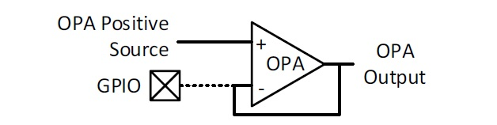

| Summary: |
The Unity Gain Configuration checkbox selects the Unity Gain buffer, also known as voltage follower. In this case the op amp is configured so that it does not amplify or attenuate the input signal. |
| Description: |
The Unity Gain is a non-inverting amplifier with the output directly connected to the inverting input. This setup releases the inverting input pin as a general purpose input/output pin. |

| Additional Information |
The Channel Select allows as output source the following modules : PRG, DAC or FVR, depending on the device. Once a module output is selected, a hint to configure the selected module is generated in the Notifications tab. |
| Availability: |
The Unity Gain Configuration checkbox is not available for the PIC16(L)F178X devices. The Channel select is always available. |